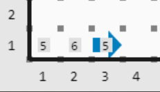

Contenido
Sucede
El operador succ recibe un valor numérico y calcula ese valor más uno.
Por ejemplo, el siguiente código deja 5 zumbadores, porque 4 + 1 = 5
iterate (succ(4))
putbeeper();
También se puede cambiar con parámetros. Una cosa importante a notar, el operador nunca modifica el valor de un parámetro.
Por ejemplo, el código de abajo produce la siguiente imagen:

class program {
}
define deja(n) {
iterate (n)
putbeeper();
}
define funcion(n) {
deja(n);
move();
deja(succ(n));
move();
deja(n);
}
program () {
funcion(5);
turnoff();
}
}
Precede
El operador pred recibe un valor numérico y calcula ese valor menos uno.
Un ejemplo abajo:

class program {
}
define deja(n) {
iterate (n)
putbeeper();
}
define funcion(n) {
deja(n);
move();
deja(pred(pred(n)));
move();
deja(pred(n));
}
program() {
funcion(5);
turnoff();
}
}
Segundo parámetro
Desde ReKarel 2.0.0Ambos, sucede y precede pueden recibir un segundo parámetro para especificar cuanto tienen que sumar o restar.
Veamos dos ejemplos válidos:
- succ(n, 3) Calcula n + 3
- pred(4, 8) Calcula 4 - 8
Este segundo parámetro debe ser un número, no puede ser una variable, parámetro, etc. Por lo tanto, los siguientes ejemplos no són validos: